.rscene File
.rscene is the on-disk text format used by RaiSim Engine 2 to save and
load scenes. It is the canonical serialization of an Engine 2 Scene: every
authoring resource the editor can manipulate — physics settings, the /World
scene tree, materials, lights, cameras, objects, articulated systems, terrain
regions, sensors, decals, constraints, render-bake settings, and so on — is
round-tripped through it. The format is plain text, line-oriented, and diffs
cleanly under version control.
Note
.rscene does not replace the World Configuration XML. The two formats are intended for different
workflows and both stay supported going forward:
The XML world configuration file is the human-editing format. It is hand-written, supports
include,params,arrayloops, and{...}expressions for parametric/templated worlds, and stays compact because it only describes the physics side..rsceneis the Engine 2 format. It is produced and consumed byraisim_engine2(the editor and the.re2scripting layer), and stores the full authoring document — the same physics records as XML plus much richer visualization and editor state: lights, cameras, environment, weather, reflection probes, decals, irradiance volumes, sensors, terrain layers, instanced visuals, render-quality presets, groups, snapping, prefab overrides, and so on.
Pick the XML world configuration file when you are writing scenes by
hand or generating them with templates. Pick .rscene when you are
working through the Engine 2 editor or want the visualization,
lighting, and sensor metadata to round-trip with the scene.
{kind=link}
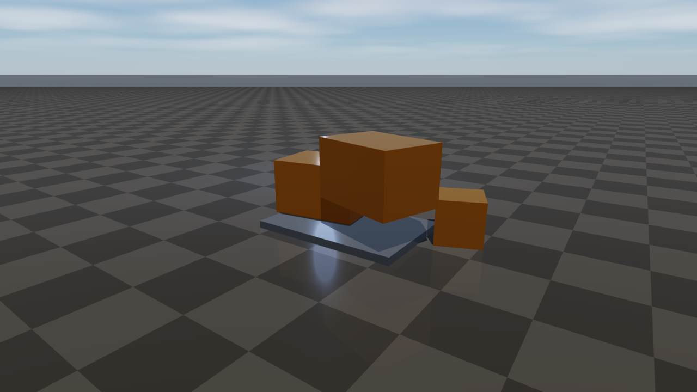
The image above is what the warehouse-style .rscene example used
throughout this page looks like once instantiated: a ground with a grey
mat_floor material, two stacked crates and a smaller one in
safety-orange mat_safety, a warm spot light as the key, a cool fill
point light, and the procedural rayrai_sky background from the
environment + weather records.
.rscene vs. the World Configuration XML
RaiSim ships two text formats for describing scenes, and they coexist by design:
The XML world configuration file is the hand-edited format used directly with
raisim::World. It is small, parametric, and ideal when a human is writing or templating a scene.The .rscene file is the Engine 2 format produced by the editor and
.re2scripts. It stores the same physics description plus the visualization and editor state that the editor needs to round-trip.
The table below maps how the two formats overlap and where .rscene
adds capability that the XML format intentionally does not carry.
World Configuration XML ( |
|
|
|---|---|---|
Reader / writer |
|
|
Scope |
Pure physics world: gravity, time step, materials, bodies, constraints, and articulated systems. No rendering, lighting, or editor state. |
Full authoring document: physics plus the rendering scene (lights, cameras, environment, weather, decals, probes, terrain layers, sensors, point clouds, instanced visuals) plus editor state (selection, snapping, prefab overrides, folder groups). |
Hierarchy |
XML tree ( |
Flat record-per-line stream; tree structure is recovered from
|
Authoring style |
Hand-written XML, with templates, |
Produced by the Engine 2 editor or by |
Round-trip with the editor |
One-way: an XML file can be loaded into |
Round-trip: open in |
Runtime use |
Loaded directly by the physics engine in production simulations and RL training (see RaisimGymTorch). |
Loaded by Engine 2, then instantiated into a |
When to use |
You are writing the scene by hand, templating physics worlds, or wiring up a physics-only simulation / RL environment. |
You are working through the Engine 2 editor or want the visualization, sensors, and render settings to round-trip with the scene. |
The two formats are not interchangeable: Engine 2 does not currently emit
.xml, and the XML reader does not consume .rscene. They are
complementary surfaces for the same underlying physics world — hand-editable
on one side, editor-driven on the other.
File Layout And Lexical Rules
A .rscene file is a sequence of newline-separated records. The first
non-blank, non-comment record must be the version header; every subsequent
record describes one scene resource or one tree node.
Token Encoding
Tokens within a line are separated by spaces or tabs. There is no quoting
mechanism. Instead, any byte that is a control character, space, % or
= is percent-encoded as %HH (uppercase two-digit hex) when the saver
writes it, and the loader decodes it on the way back in. Bare - is the
canonical encoding of the empty string.
# "A label with spaces" → "A%20label%20with%20spaces"
asset A%20label%20with%20spaces mesh meshes/crate.obj id=crate_a ...
# An empty optional path is written as a single dash:
material engine_default 0.55 0.62 0.72 1 0 0.55 0 0 0 0 false - - - - - - id=engine_default ...
Numbers, Booleans, And Packed Values
Numbers are serialized with
std::to_charsso doubles round-trip exactly; the loader parses withstd::from_chars. Both decimal and scientific notation are accepted.Booleans accept
true/1/yes/onandfalse/0/no/off. The saver always emitstrue/false.Vec2 / Vec3 are packed as comma-separated CSV inside a single token:
broadphaseWorldMin=-100,-100,-100,uvScale=2,1.Quat uses
w,x,y,zordering:quat=1,0,0,0is identity.Color is
r,g,b(three components) orr,g,b,a(four components); the loader accepts either.Lists of structs use
;between elements and,between fields.Transformlists pack 10 numbers per entry (position, quaternion, scale).Vec3lists pack 3 per entry. Quaternions in transform lists are re-normalised on load.Dense scalar arrays (heightmaps, vertex colors, splat weights, pinned vertices) are plain comma-separated CSV — they have only one level of delimiter,
,.String lists (module lists, material remaps, selection filters) are
;-separated lists where each element is itself a percent-encoded token.
# Vec3 inside one token:
gravity 0 0 -9.81 # three positional tokens
broadphaseWorldMin=-100,-100,-100 # CSV-packed Vec3 as a key=value
# Quaternion field on a `light` record:
quat=1,0,0,0
# Color with and without alpha:
color=0.66,0.78,0.96 # rgb
color=0.66,0.78,0.96,1 # rgba
# Transform list (instanced_visual): two instances:
instances=1.0,0.0,0.0,1,0,0,0,1,1,1;3.0,0.5,0.0,1,0,0,0,1,1,1
Record Anatomy
Each non-comment line is one record:
<tag> <positional_1> <positional_2> ... <key=value>=... <key=value>=...
The first token is the tag (record kind). Subsequent tokens are either
positional (parsed by index — the saver always writes the same number in
the same order) or key=value pairs parsed by name. The loader reads the
positional fields by index, then scans the rest for any =-bearing tokens
and looks them up by name. Unknown keys are silently ignored, which is
what makes the format forward-compatible: a newer writer can add fields that
older readers will drop on load without erroring.
object /World/Props/CrateA box -0.6 0.2 0.6 0.998 0 0 0.0698 0.7 0.5 0.45 0.5 1 2.5 default mat_safety false true false - dynamic true 1 18446744073709551615 id=object_cratea parentGroupId=folder_props ...
In that one line: object is the tag; /World/Props/CrateA is the
scene-tree path; box is the primitive kind; the next 10 numbers are
position (3), quaternion w,x,y,z (4) and scale (3); then 0.5 1 2.5 is
radius height mass; then default mat_safety are contact material and
visual material names; the remaining positional flags are visualOnly,
visible, locked, mesh path (- ⇒ empty), body mode, collidable,
collision group, and collision mask. Everything after that is named
key=value.
Mandatory Header And Version
The first non-blank, non-comment line must be the version header.
raisim_engine_scene 1
The loader rejects the file with missing raisim_engine_scene header if it
is absent and with unsupported rscene version if the number does not
match the version this build of Engine 2 understands. The version is a single
integer; bumping it is a breaking change.
Section Order
The saver always emits records in a fixed, top-down order. The loader does not require this order, but humans, reviewers, and diff tools benefit from the convention, and Engine 2 produces a byte-stable round-trip for unchanged scenes when the binary version matches.
Header:
raisim_engine_scene 1.Physics:
time_step,gravity,solver.Editor / authoring state:
snapping,asset_root,scene_graph,prefab_override(zero or more),editor_ux,render_bake.Environment / rendering:
environment,weather,rayrai_render.Resources:
material(many),contact_material(many),terrain_texture(many),asset(many),articulated_resource(many).Scene tree:
grouprecords that lay out the folder hierarchy.Terrain regions, with each region followed by its
terrain_splat_layerandterrain_foliage_layerchildren.light,camera,object,compound(each followed by itscompound_childrecords),deformable,granular,articulated(each followed by itsarticulated_ikIK targets).sensor,wire,reflection_probe,local_fog,projected_decal,irradiance_volume,point_cloud,instanced_visual.
Identity Model
The scene tree is encoded redundantly: every node carries both a path and an id.
Paths are slash-separated and rooted at
/World, for example/World/Props/CrateA. They are how the editor,.re2scripts, and selection refer to nodes. Paths are unique within a scene.Ids are stable string handles (
id=object_cratea). Parent references use the parent’s id, not its path. Ids are what survive renames and reparenting in the editor; if you rename/World/Propsto/World/Cratesthe ids underneath stay the same.Hierarchy is established by
grouprecords that declare the folder layout (/World,/World/Props,/World/Lights…) and by each leaf’sparentGroupId(objects, lights, cameras, etc.) orparentId(some non-physical nodes). The root/Worldgroup hasparentId=-, which decodes to the empty string.
Whole-Scene Records
raisim_engine_scene
Format version token. Currently fixed at 1.
raisim_engine_scene 1
time_step
Default simulation time step in seconds. Used by both physics and any sensor that publishes at the world’s rate.
time_step 0.0025
gravity
Gravity vector in m/s², written as three positional numbers.
gravity 0 0 -9.81
solver
Solver configuration: iteration count, tolerance, ERP, mode (accurate,
fast, …), followed by a long list of default material parameters,
contact-solver tunings, CCD settings, broadphase settings, and world time.
All non-positional fields are key=value so they can be omitted.
solver 80 1e-07 0.2 accurate erp2=0 defaultFriction=0.8 defaultRestitution=0 \
defaultRestitutionThreshold=0.001 defaultStaticFriction=0.8 \
defaultStaticFrictionVelocityThreshold=0.001 defaultRollingFriction=0 \
defaultSpinningFriction=0 contactAlphaInit=1 contactAlphaMin=1 \
contactAlphaDecay=1 contactMaxIterations=80 contactThreshold=1e-07 \
contactGjkMaxIterations=32 contactGjkTolerance=1e-06 \
contactEpaMaxIterations=64 contactEpaTolerance=0.0001 \
maxContactsPerPair=8 sweptCcdEnabled=false sweptCcdMinSpeed=0 \
sweptCcdSpeculativeMargin=0.0001 sleepingEnabled=true \
sleepingLinearVelocityThreshold=0.002 sleepingAngularVelocityThreshold=0.01 \
sleepingQuietSteps=2 broadphaseType=sap3_axis \
broadphaseWorldMin=-100,-100,-100 broadphaseWorldMax=100,100,100 \
broadphaseCellSize=1,1,1 broadphaseUseWorldBounds=false \
broadphasePadding=0.5 broadphaseMaxCellsPerAxis=128 \
broadphaseMaxCellsPerObject=64 worldTime=0 \
fixedContactSolverIterationOrder=false
(The backslash continuations above are for legibility; a real .rscene
keeps everything on a single line — there is no continuation syntax.)
The first four positional tokens are required: iterations,
tolerance, erp, mode. Every other knob has a default and can be
omitted.
asset_root
Relative path the scene resolves mesh and texture references against. .
means “the directory of the scene file”. This makes scenes saved under a
project portable as long as the assets travel with them.
asset_root .
snapping
Editor snapping state — grid / angle / scale checkboxes, step sizes, and the surface normal used by surface snap.
snapping true true false false false false false false 0.1 15 0.1 0 surfaceNormal=0,0,1
Positional layout: 8 booleans (grid, angle, scale, then 5 reserved
flags written as false), then gridSize (m), angleDegrees,
scaleStep, a reserved trailing 0, then the surfaceNormal key.
scene_graph, prefab_override
Global scene-tree behaviour, plus an optional list of per-node prefab property overrides.
scene_graph inheritedTransforms=true keepWorldTransformOnReparent=true \
dragReparenting=true packedSceneOverrides=true transformSpace=global
prefab_override /World/Props/Pallet property=visible value=false
Each prefab_override carries a node path, the property name, and the value
the prefab instance should override. Zero or more are allowed.
editor_ux
Per-user editor preferences — multi-select, copy/paste, duplicate, transform
local-space toggle, selection filters, undo grouping, and the selection
filter kind list (a ;-separated string list).
editor_ux multiSelect=true copyPaste=true duplicate=true \
transformLocalSpace=false selectionFilters=true strongUndoGrouping=true \
selectionFilterKinds=object;light;camera
render_bake
Settings for offline bakes invoked from the editor — probe/lightmap/irradiance captures and rayrai’s debug reports.
render_bake probeCaptureOnSave=false lightmapBakeEnabled=false \
irradianceBakeEnabled=false renderDiagnostics=false \
lightmapResolution=1024 probeCubemapSize=256 outputDirectory=bakes
environment
Sky/background, ambient, fog, post processing, and PBR environment lookup.
Positional layout is backgroundR backgroundG backgroundB ambientR ambientG
ambientB fogDensity shadows true 10 envMapPath followed by many named
fields.
environment 0.08 0.10 0.13 0.24 0.25 0.29 0 true true 10 - \
fogColor=0.66,0.78,0.96 exposure=1.05 gamma=2.2 \
bloomIntensity=0.12 bloomThreshold=0.82 bloomRadius=4 \
shadowMapSize=2048 shadowedLightBudget=1 backgroundMode=rayrai_sky \
colorMode=unreal_preview pbrEnvironmentIntensity=1 fxaa=true ssao=true \
heightFogEnabled=false heightFogDensity=0 heightFogBaseHeight=0 \
heightFogFalloff=0.35
The 11th positional token is the environment-map texture path; - means
“no HDR, use the procedural sky from weather”. backgroundMode
accepts rayrai_sky, hdr, or plain_color.
weather
Rayrai sky / time-of-day / cloud / precipitation / lightning settings. The
first positional token is the master enabled boolean; everything else is
named.
weather true preset=clear quality=high seed=1 timeOfDay=14 \
latitude=37 longitude=127 year=2026 month=7 day=15 \
windDirection=1,0.25,0 windSpeed=1.2 transitionSeconds=0 \
affectSensors=false cloudCoverage=0.03 cloudDensity=0.04 \
precipitationRate=0 rainOcclusionStrength=0 fogDensity=0 \
visibilityMeters=20000 fogColor=0.66,0.78,0.96 humidity=0.22 \
wetness=0 snowCoverage=0 lightningRate=0 \
useExplicitSunAngles=true sunAzimuthDegrees=210 sunElevationDegrees=58
preset is one of the rayrai presets (clear, overcast, storm,
…). quality selects sample counts for the procedural sky. Setting
useExplicitSunAngles=true lets you override the date/time astronomical
solver with explicit azimuth/elevation.
rayrai_render
Render-quality preset and post-processing toggles. preset is the named
preset (fast / balanced / high / ultra); custom=true
means the named fields override the preset’s defaults.
rayrai_render preset=ultra custom=false colorMode=unreal_preview \
shadowResolution=2048 shadowBias=0.0008 shadowStrength=0.6 \
shadowPcfRadius=1.25 highFidelityPbr=false pbrToneMapping=false \
pbrExposure=1 autoExposure=false autoExposureKey=0.18 \
autoExposureSpeed=0.05 volumetricFog=false volumetricFogDensity=0 \
volumetricLightStrength=0 contactShadows=false contactShadowsLength=0.12 \
contactShadowsStrength=0.7 screenSpaceReflections=false \
screenSpaceReflectionStrength=0 motionBlur=false motionBlurDirection=0,0 \
motionBlurStrength=0 depthOfField=false depthOfFieldFocusDistance=5 \
depthOfFieldAperture=0 diagnostics=false
{kind=link}
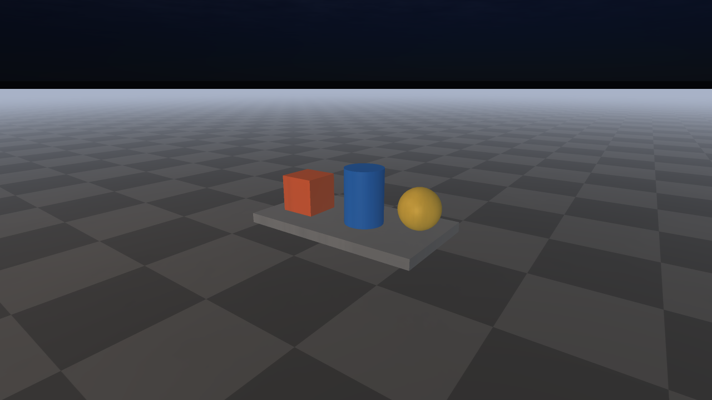
The image shows the whole-scene records working together: environment
sets sky/fog/post-processing defaults, weather drives the procedural
overcast sky and time of day, and rayrai_render selects the render-quality
preset used for the capture.
Resources
These records define named, scene-global resources that scene-tree nodes
reference by id or name. They are written before any group / object
record.
material
A material record names a PBR-style material and is referenced from objects,
compounds, instanced visuals, terrain regions, etc. The positional fields are
the legacy compact form (name r g b a metallic roughness eR eG eB
emissiveStrength doubleSided albedoTex normalTex metallicTex roughnessTex
aoTex emissiveTex); the named fields cover every other slot (UV transform,
alpha mode, anisotropy, clearcoat, sheen, foliage, weather response,
stencil/depth state, detail maps, lightmaps, and three texture transforms for
albedo / normal / metallic-roughness).
material mat_floor 0.45 0.46 0.48 1 0 0.82 0 0 0 0 false - - - - - - \
id=mat_floor type=pbr uvScale=2,2 uvOffset=0,0 uvRotation=0 \
alphaMode=opaque alphaCutoff=0.5 normalStrength=1 normalConvention=opengl \
ior=1.5 transmission=0 cullMode=back \
albedoTransformAuthored=false albedoTransformScale=1,1 \
albedoTransformOffset=0,0 albedoTransformRotation=0
The trailing albedoTransform*, normalTransform* and
metallicRoughnessTransform* blocks are emitted by writeTextureTransform
for each texture slot so per-texture UV authoring round-trips. Any unused
texture slot is written as - (empty).
contact_material
Pairwise contact-material override — looked up by material A × material B.
contact_material default rubber 0.95 0.03 0.001 0.8 0.001 0.01 0.01 \
id=default_rubber
Positional layout: materialA materialB friction restitution
restitutionThreshold staticFriction staticFrictionVelocityThreshold
rollingFriction spinningFriction.
terrain_texture
A texture slot for terrain layer painting. The slot index is referenced by
terrain_region.baseTexture and by terrain_splat_layer.slot.
terrain_texture 0 terrain_grass Grass color=0.28,0.43,0.2,1 albedo=- \
normal=- uvScale=4 normalDepth=1 aoStrength=1 roughness=0.82 \
detile=0,0 displacement=0,1
Positional layout: slot id name. The optional displacementTexture key
is written only when set.
asset
An imported mesh asset (gltf, glb, obj, fbx, etc.) plus its import-time
options and generated-collision settings. Assets are referenced by id from
object.renderMeshPath (when the object is a mesh primitive) and by
imported scene tooling.
asset Crate mesh meshes/crate.glb id=asset_crate defaultMaterial=mat_crate \
contactMaterial=default collisionPath=meshes/crate_col.obj bodyMode=dynamic \
mass=2.0 scale=1,1,1 quat=1,0,0,0 collidable=true collisionMode=convex_hull \
importSource=meshes/crate.glb importer=assimp autoReimport=true \
generateCollision=true generatedCollision=convex_hull \
remapMaterials=true importScale=1 importUpAxis=z importFlipWinding=false \
importRecenter=false importApplyRootScale=false \
materialRemaps=metal;mat_crate_metal;rubber;mat_crate_rubber \
importWarnings= sourceTimestamp=0 sidecarTimestamp=0 \
meshCollision=convex_hull customInertia=false inertiaDiagonal=0,0,0 \
centerOfMass=0,0,0 coacdThreshold=0.08 coacdMaxConvexHull=8 \
coacdPreprocess=off coacdSampleResolution=800
Positional layout: label primitiveKind path. The trailing
meshCollision / coacd* block is emitted by writeMeshCollision and
covers the COACD convex-decomposition parameters used when the asset
generates its own collision.
articulated_resource
URDF/MJCF resource declaration. articulated scene nodes refer back to it
by resourceId.
articulated_resource cassie_resource Cassie urdf/cassie/robot.urdf \
resourceDirectory=urdf/cassie modules=actuator_pd;gait_planner \
jointOrder=hip_yaw;hip_pitch;knee;ankle \
doNotCollideWithParent=true convexifyCollisionMeshes=true
{kind=link}
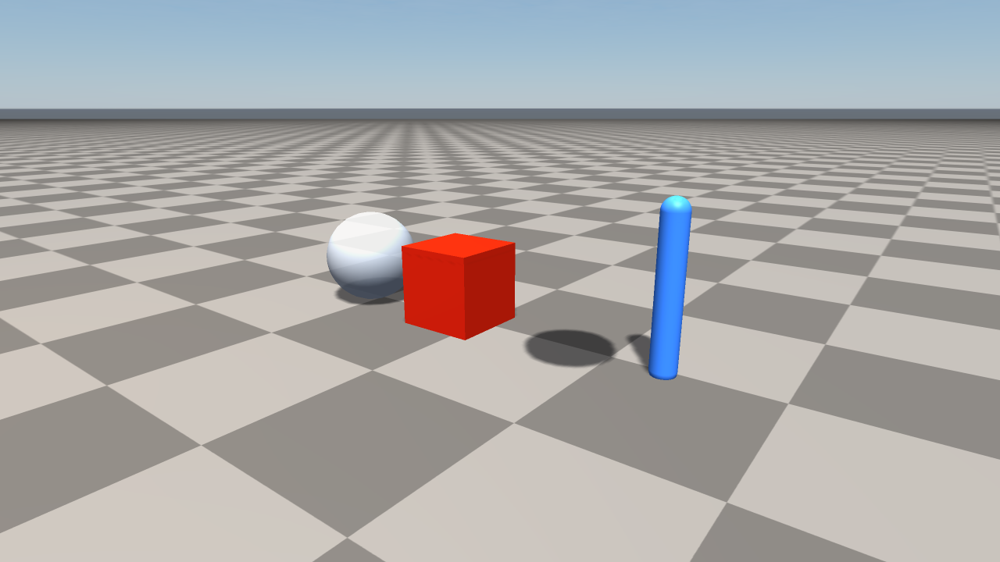
The resource records are scene-global definitions. In the image, the material
samples represent material records, the imported marker represents an
asset record, and the upright blue marker stands in for an
articulated_resource that later articulated records instantiate.
Scene Tree Containers
group
A folder inside the scene tree. Groups have a path, an id, optional parent
id, and editor flags. The root /World group has parentId=-.
group /World id=folder_world parentId=- visible=true locked=false expanded=true
group /World/Props id=folder_props parentId=folder_world visible=true \
locked=false expanded=true
group /World/Lights id=folder_lights parentId=folder_world visible=true \
locked=false expanded=true
{kind=link}
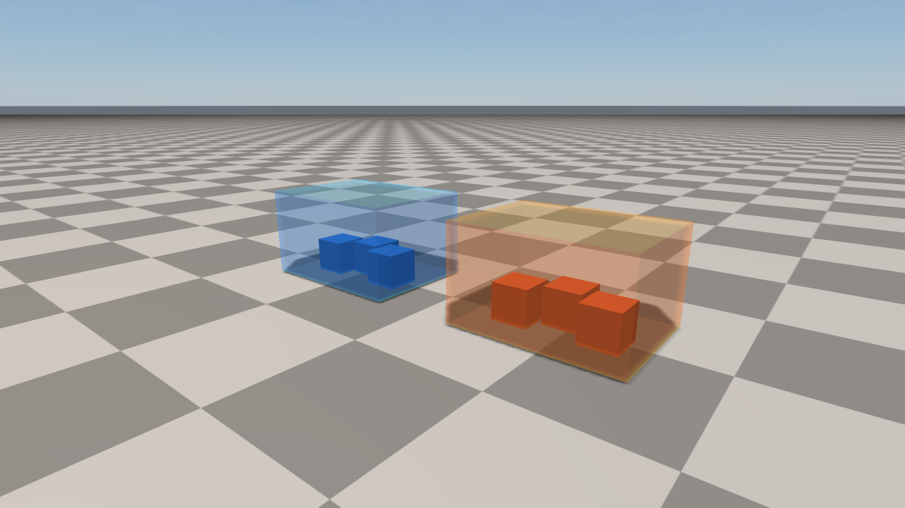
Groups are editor/scene-tree containers, not physics bodies. The translucent
volumes in the image show how child objects are organised under separate
group paths while remaining ordinary world objects.
Bodies And Constraints
light
A scene light. The first 5 positional tokens are the legacy
direction(x,y,z) and intensity; everything else is named, including
type (directional, point, spot, area), full attenuation
constants, projector cookie, color temperature, distance fade, and shadow
parameters.
light /World/Lights/Key -0.4 0.5 -1 4 id=light_key type=spot \
position=2,-3,4 color=1,0.86,0.64 ambientColor=0,0,0 \
specularColor=1,1,1 specularIntensity=1 \
attenuationConstant=1 attenuationLinear=0.04 attenuationQuadratic=0.012 \
range=14 coneAngle=30 innerConeAngle=18 radius=0 \
areaSize=1,1,0 areaRight=1,0,0 areaUp=0,1,0 \
projectorTexture=- projectorStrength=0 projectorUvScale=1,1 \
projectorUvOffset=0,0 negative=false temperatureEnabled=false \
shadows=true colorTemperature=6500 distanceFadeEnabled=false \
distanceFadeBegin=40 distanceFadeShadow=50 distanceFadeLength=10 \
shadowResolution=2048 shadowBias=0.0008 shadowStrength=0.85 \
shadowPcfRadius=1.25 shadowOrthoHalfSize=5 shadowNear=0.1 shadowFar=30 \
shadowCenter=0,0,0 shadowPosition=0,0,0 shadowUseCustomPosition=false
camera
A scene-graph camera. Positional fields are
path pos(x,y,z) rot(w,x,y,z) verticalFov nearPlane farPlane width height
renderMode enabled. renderMode is one of rgb, depth,
segmentation, rgb_depth, etc. The remaining keys configure preview
post-processing and an optional output path for headless captures.
camera /World/Cameras/Editor 3 -5 2.2 0.488 -0.116 0.066 0.862 52 0.05 100 \
1280 720 rgb true id=camera_editor projection=perspective horizontalFov=0 \
orthoScale=10 previewPostProcessing=true previewExposure=1 \
previewGamma=2.2 previewDepthOfField=false previewFocusDistance=5 \
previewAperture=0 outputPath=-
{kind=link}
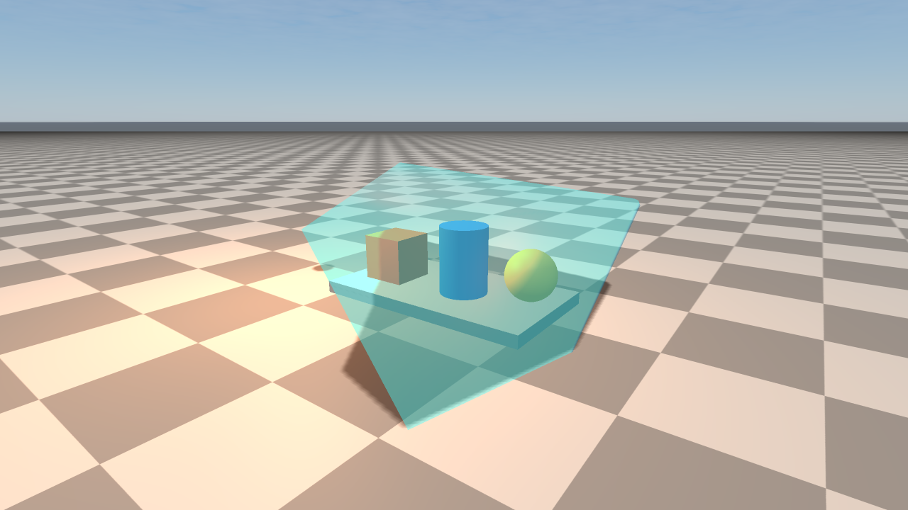
The warm marker shows the authored light position and influence, while the
cyan frustum visualises the camera projection, near/far planes, and field
of view that are stored in the record.
object
The most common body record: ground, primitives, single meshes, and
single-body imports all become object records.
Positional layout (in order):
path— scene-tree path.primitive—ground,box,sphere,cylinder,capsule,mesh,half_space, …position(3 numbers).rotation(4 numbers,w,x,y,z).scale(3 numbers).radiusandheight— used by sphere/capsule/cylinder; ignored otherwise.mass.contactMaterialname.materialname (visual).visualOnlyboolean — convenience alias for body modevisual_only.visibleboolean.lockedboolean — convenience alias for body modestatic.meshPath—-for primitives.bodyMode—dynamic,static,kinematic,visual_only.collidableboolean.collisionGroup(uint64).collisionMask(uint64).
Then a large key=value block covering identity, semantic-segmentation
metadata, optional separate render/collision meshes, rayrai per-visual
parameters (transparency, visibility range, mesh LOD, custom bounds,
per-object PBR environment override), per-object raisim solver overrides,
collision groups and masks, and the same writeMeshCollision COACD block
as asset.
object /World/Ground ground 0 0 0 1 0 0 0 18 18 1 1 0 0 \
default mat_floor false true true - static true 1 18446744073709551615 \
id=object_ground parentGroupId=folder_world semanticClass=- \
instanceId=-1 segmentationColor=1,1,1 materialRemaps= \
renderMeshPath=- collisionMeshPath=- collisionMode=primitive \
castShadow=true visualUseMeshColor=false ...
object /World/Props/CrateA box -0.6 0.2 0.6 0.998 0 0 0.0698 0.7 0.5 0.45 \
0.5 1 2.5 default mat_safety false true false - dynamic true 1 \
18446744073709551615 id=object_cratea parentGroupId=folder_props ...
parentGroupId=folder_props ties the crate to the /World/Props folder
declared earlier.
compound, compound_child
A compound rigid body — a single physics body composed of several primitive
shapes. The compound record carries the body’s transform, mass, inertia,
center of mass, and collision masks. Each child shape is emitted on a
following compound_child line with the parent compound’s path repeated
as a back-reference.
compound /World/Props/Forklift 1 -2 0.5 1 0 0 0 1 1 1 12.0 dynamic true true \
id=compound_forklift parentGroupId=folder_props \
centerOfMass=0.0,0.0,0.3 inertiaDiagonal=2,2,1.2 \
collisionGroup=1 collisionMask=18446744073709551615 \
semanticClass=vehicle
compound_child /World/Props/Forklift box 0 0 0 1 0 0 0 1 1 1 \
size=1.2,0.8,0.4 radius=0 height=0 contactMaterial=default material=mat_safety
compound_child /World/Props/Forklift cylinder 0.3 0 -0.2 1 0 0 0 1 1 1 \
size=0,0,0 radius=0.15 height=0.1 contactMaterial=default material=mat_metal
Children’s positions, rotations, and scales are expressed in the compound’s
local frame. size/radius/height are interpreted per primitive
kind.
{kind=link}
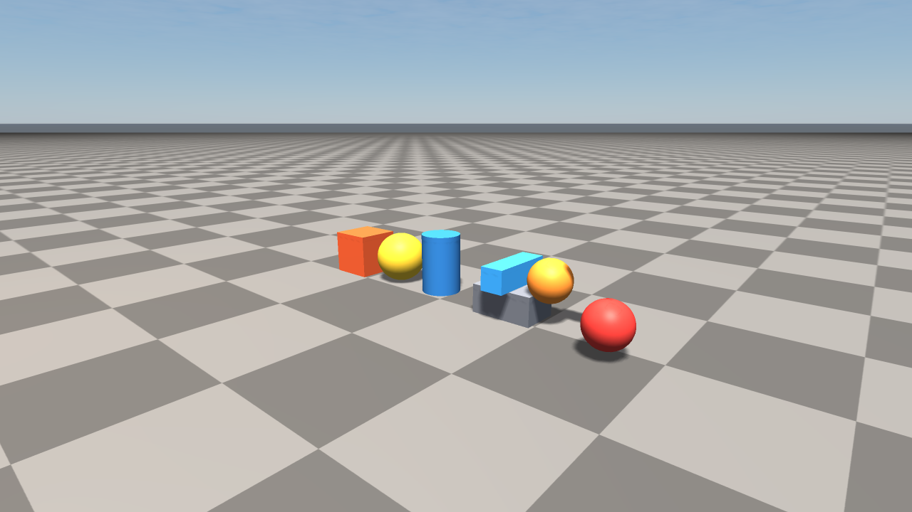
This image groups the rigid-body records: standalone object primitives on
the left, a compound with several compound_child shapes in the middle,
and a wire constraint visualised as a taut segment on the right.
deformable
A soft body (cloth, mass-spring, or FEM volume). Positional layout:
path kind meshPath pos(x,y,z) rot(w,x,y,z) scale(x,y,z). kind is one
of cloth, mass_spring, fem (and any future kinds).
deformable /World/Props/Flag cloth meshes/flag.obj 2 0 1.8 1 0 0 0 1 1 1 \
id=deformable_flag parentGroupId=folder_props \
pinnedVertices=0,1,2,3 scale=1 totalMass=0.2 \
distanceCompliance=0 distanceStiffness=1000 bendCompliance=0 \
bendStiffness=100 youngsModulus=0 poissonRatio=0.3 thickness=0.002 \
damping=0.01 collisionRadius=0.01 iterations=20 substeps=1 \
solverMode=xpbd particleMode=skinned particleSpacing=0.05 \
contactMaterial=default material=mat_fabric visible=true collidable=true \
collisionGroup=1 collisionMask=18446744073709551615
pinnedVertices is a comma-separated list of vertex indices that are held
in place.
granular
A particle system (sand, gravel, fluid-ish particles). Positions and radii
can be specified per-particle, or a boxMin/boxMax + spacing lets
the engine fill a box at load time.
granular /World/Sandbox/Sand particles 0 0 0 1 0 0 0 1 1 1 \
id=granular_sand parentGroupId=folder_sandbox \
positions= radii= boxMin=-0.5,-0.5,0.0 boxMax=0.5,0.5,0.3 \
radius=0.01 spacing=0.025 maxParticles=20000 velocity=0,0,0 \
angularVelocity=0,0,0 materialId=0 fixed=false density=1600 \
normalStiffness=1e6 normalDamping=200 tangentialStiffness=1e5 \
tangentialDamping=20 friction=0.6 rollingFriction=0.05 \
cohesionStiffness=0 cohesionMaxDistance=0 normalContactModel=hertz \
substeps=2 visible=true
When positions is non-empty it overrides the box fill; radii is the
matching per-particle radius list (;- or ,-CSV depending on whether
each entry is a Vec3 or a scalar).
{kind=link}
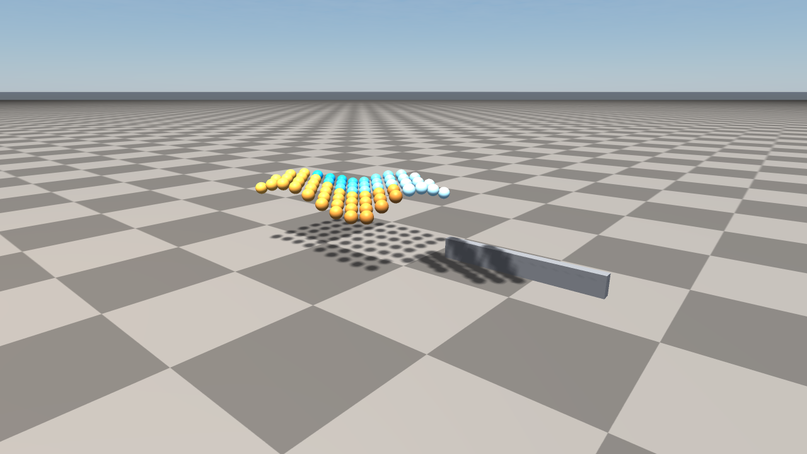
The left cluster sketches a deformable node with particle/mesh state, and
the right pile sketches a granular record filled from a box plus spacing.
articulated, articulated_ik
An articulated system instance, by reference to an
articulated_resource. The positional layout is path resourceId
pos(x,y,z) rot(w,x,y,z) visible collidable.
articulated /World/Robots/Cassie cassie_resource 0 0 1.0 1 0 0 0 true true \
id=articulated_cassie parentGroupId=folder_robots \
sourcePath=urdf/cassie/robot.urdf resourceDirectory=urdf/cassie \
modules=actuator_pd;gait_planner \
jointOrder=hip_yaw;hip_pitch;knee;ankle \
scale=1,1,1 doNotCollideWithParent=true convexifyCollisionMeshes=true \
collisionGroup=1 collisionMask=18446744073709551615 \
generalizedCoordinate=0,0,1.0,1,0,0,0,0,-0.6,1.2,-0.6 \
generalizedVelocity=0,0,0,0,0,0,0,0,0,0,0 \
semanticClass=robot
articulated_ik /World/Robots/Cassie left_foot_link 0.0,0.15,0.05 \
enabled=true useOrientation=true orientation=1,0,0,0 \
maxIterations=80 positionTolerance=0.001 orientationTolerance=0.01 \
orientationWeight=0.5 damping=0.05 stepSize=0.5 maxStep=0.1 \
svdTolerance=1e-6 finiteDifferenceStep=1e-4 \
applyBestOnFailure=true enforceJointLimits=true \
inverseMethod=damped_least_squares transposeGain=0
generalizedCoordinate/generalizedVelocity are CSV lists of doubles —
the floating-base pose + per-joint configuration.
articulated_ik lines belong to the most recent articulated record:
each defines a frame target (frame name, target position, optional target
orientation) and the IK solver knobs used to drive that frame.
{kind=link}
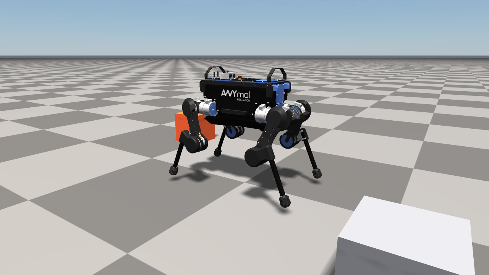
The image renders the equivalent of an articulated_resource + articulated
pair: a URDF-loaded ANYmal quadruped placed at world origin with the
standing pose generalizedCoordinate=0,0,0.54,1,0,0,0,0.03,0.4,-0.8,...
encoded into the record. The orange box on the left and the grey box on the
right are ordinary object records (object /World/Props/...) included
to give the robot a sense of scale.
wire
A length constraint between two bodies. Positional layout:
path kind bodyA bodyB length.
wire /World/Constraints/Hoist stiff object_crateb compound_forklift 2.5 \
id=wire_hoist localIndexA=0 localIndexB=0 \
localPositionA=0,0,0.225 localPositionB=0.3,0,0.4 \
stiffness=1000 damping=10 compliance=0 \
visualizationWidth=0.01 enabled=true
kind is one of stiff, compliant, custom. localIndexA/B and
localPositionA/B describe the attachment points on each body’s local
frame.
Terrain
terrain_region
A heightfield region. The first set of positional tokens describes the grid:
path xSamples ySamples xSize ySize center(x,y,z). The rest of the line
holds per-cell arrays — the heightmap itself plus optional texture splatting,
wetness, holes, and per-vertex colours.
terrain_region /World/Terrain/SculptedField 17 17 8 5.5 0 3.2 0 \
id=terrain_sculptedfield parentGroupId=folder_terrain location=0,0 \
material=mat_terrain contactMaterial=default baseTexture=2 \
visible=true collidable=true castShadow=true receiveShadow=true \
sourceKind=samples sourcePath=- cloneSource=- \
pngHeightScale=1 pngHeightOffset=0 \
proceduralFrequency=0.1 proceduralZScale=2 proceduralOctaves=5 \
proceduralLacunarity=2 proceduralGain=0.5 proceduralStepSize=0 \
proceduralHeightOffset=0 proceduralSeed=5489 \
lodLevels=7 collisionShapeSize=64 textureSplattingEnabled=true \
heights=0.02,0.02,0.0365,0.0640,... \
texturePrimary=0,0,0,0,3,3,3,... \
textureSecondary=0,0,3,3,3,3,3,... \
textureBlend=0,0,0.04,0.13,0.20,... \
wetness=0,0,0,0,... holes=0,0,0,0,... \
vertexColors=1,1,1,1;1,1,1,1;1,1,1,1;...
sourceKind selects whether heights are explicit samples
(heights=...), generated from a PNG (sourcePath=heightmap.png plus
pngHeightScale/pngHeightOffset), generated procedurally
(procedural* keys), or cloned from another region.
{kind=link}
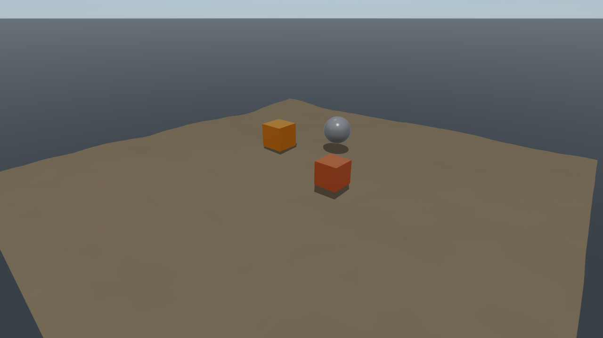
The image is what a procedural terrain_region record looks like when
loaded: a 41×41 sample heightmap covering a 12 m × 12 m patch, driven by the
Perlin parameters proceduralFrequency=0.18 proceduralZScale=0.9
proceduralOctaves=5 proceduralLacunarity=2 proceduralGain=0.5
proceduralSeed=5489. The crates and boulder on top are independent
object records, included so the terrain’s relief reads against
recognisable shapes.
terrain_splat_layer, terrain_foliage_layer
Per-region splatting layers and foliage scattering layers. Each line repeats the parent region’s path as a back-reference.
terrain_splat_layer /World/Terrain/SculptedField slot=2 enabled=true \
strength=1 weights=1,1,1,1,1,0.999,0.987,...
terrain_foliage_layer /World/Terrain/SculptedField id=foliage_grass \
name=Grass enabled=true primitive=grass_blade meshPath=meshes/grass.obj \
size=0.06,0.06,0.30 colorA=0.30,0.55,0.20,1 colorB=0.45,0.65,0.25,1 \
density=1,1,1,1,... densityPerSquareMeter=120 maxInstances=200000 \
minScale=0.7 maxScale=1.3 randomYawDegrees=180 \
randomPitchDegrees=0 randomRollDegrees=0 alignToNormal=false \
minHeight=0 maxHeight=10 minSlopeDegrees=0 maxSlopeDegrees=30 \
castShadows=false detectable=false automaticMeshLod=true \
maxRenderedInstances=80000 renderedInstanceStride=1 \
projectedLod=true projectedLodMinRadiusPixels=2 projectedLodMaxStride=8 \
doubleBufferedInstanceUploads=true sortTransparentInstances=false \
seed=1234
Splat-layer weights is a per-cell CSV. Foliage density is a per-cell
CSV of normalised density values (0..1) that scales the global
densityPerSquareMeter.
{kind=link}
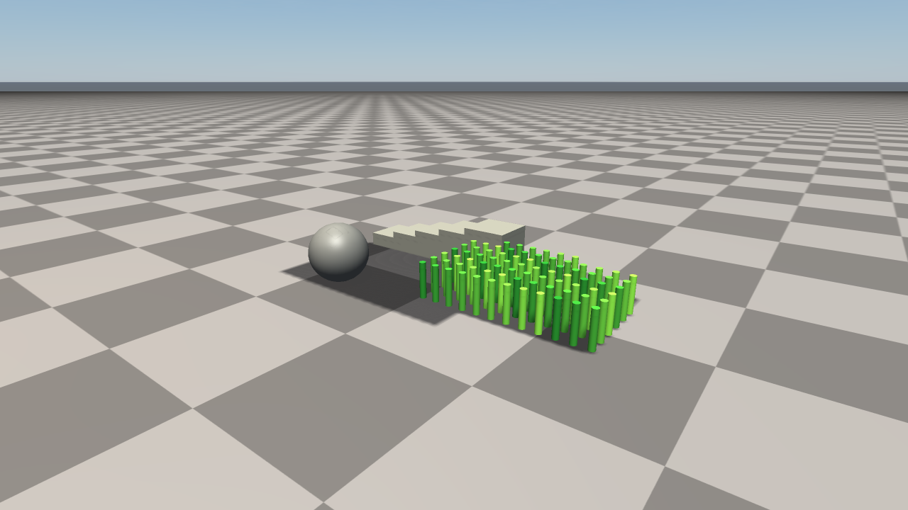
The coloured patches correspond to terrain_splat_layer weights, while the
repeated grass-like instances correspond to a terrain_foliage_layer bound
to a parent terrain_region.
Sensors And Visual Aids
sensor
A simulated sensor — RGB, depth, segmentation, IMU, lidar, force/torque, …
Positional layout: path kind parentObject pos(x,y,z) rot(w,x,y,z).
sensor /World/Robots/Cassie/Head/RgbCam rgb articulated_cassie \
0.05 0.0 0.18 1 0 0 0 \
id=sensor_head_rgb parentGroupId=folder_robots \
parentLink=head width=1280 height=720 updateRate=30 \
verticalFov=45 horizontalFov=70 nearPlane=0.05 farPlane=80 \
lidarChannels=0 lidarSamples=0 lidarMinRange=0 lidarMaxRange=0 \
lidarVerticalFov=0 segmentation=false \
calibrationFx=900 calibrationFy=900 calibrationCx=640 calibrationCy=360 \
noiseMean=0 noiseStddev=0 noiseSeed=0 enabled=true outputPath=-
sensor /World/Robots/Cassie/Body/Imu imu articulated_cassie \
0 0 0 1 0 0 0 \
id=sensor_body_imu parentLink=pelvis updateRate=200 \
noiseMean=0 noiseStddev=0.01 noiseSeed=42 enabled=true outputPath=-
parentObject is the id of the body the sensor is attached to;
parentLink is the link name within an articulated system.
reflection_probe
A static reflection capture with optional box projection. Positional layout:
path pos(x,y,z) radius.
reflection_probe /World/Probes/Hallway 0.0 0.0 1.6 6.0 \
id=probe_hallway parentGroupId=folder_probes strength=1.0 \
boxProjection=true boxMin=-3,-3,0 boxMax=3,3,3 \
captureOnApply=true captureCached=true captureFiltered=true \
cubemapSize=256 captureDrawVisualizationObjects=false \
captureDrawCoordinateFrames=false captureDrawPointClouds=false \
captureShadows=true captureEnvironmentBackground=true \
captureEnvironmentExposure=1.0 \
irradianceResolution=32 irradianceSamples=64 \
prefilteredResolution=128 prefilteredMipLevels=5 prefilteredSamples=64 \
brdfLutSize=128 brdfLutSamples=512 enabled=true
local_fog
A spherical local fog volume. Positional layout: path center(x,y,z) radius.
local_fog /World/Effects/CellarFog 2 -1 0.5 3.0 \
id=fog_cellar parentGroupId=folder_effects \
color=0.45,0.55,0.65 density=0.6 edgeFade=0.3 \
noiseScale=0.25 noiseStrength=0.4 enabled=true
projected_decal
A decal projected from a textured box onto every surface inside the box.
Positional layout: path pos(x,y,z) rot(w,x,y,z) scale(x,y,z).
projected_decal /World/Decals/PosterA 2 0 1.6 0.707 0 0 0.707 1 1 1 \
id=decal_posterA parentGroupId=folder_decals \
halfExtents=0.6,0.05,0.3 color=1,1,1,1 \
edgeFade=0.05 normalFade=0.5 upperFade=0.1 lowerFade=0.1 \
albedoTexture=textures/poster_a_albedo.png \
emissionTexture=- normalTexture=- ormTexture=- \
uvScale=1,1 uvOffset=0,0 albedoMix=1.0 emissionEnergy=0 \
normalStrength=1 ormStrength=1 \
distanceFadeEnabled=true distanceFadeBegin=12 distanceFadeLength=4 \
enabled=true
{kind=link}
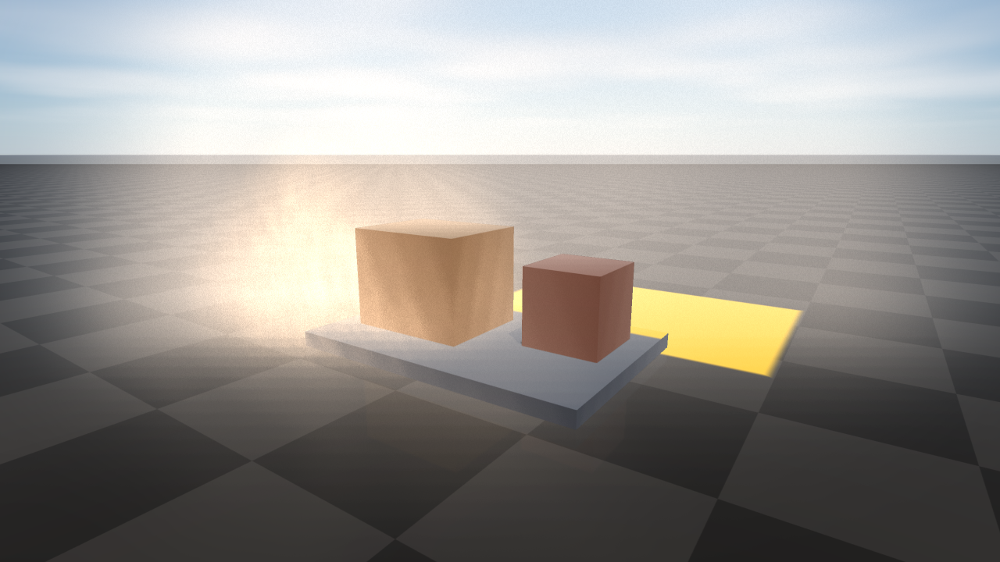
The image combines two atmospheric records on top of the warehouse scene: a
large bluish local_fog volume covering the upper area plus a denser warm
local_fog puff hugging the left side of the crates, and an emissive
warning-yellow projected_decal painted onto the floor in front of the
pallet. Both records ship in the same .rscene file as the object
records they decorate, so the atmospheric look round-trips with the
scene.
irradiance_volume
A box of constant indirect light. Positional layout: path pos(x,y,z)
rot(w,x,y,z) scale(x,y,z).
irradiance_volume /World/Volumes/Lobby 0 0 1.5 1 0 0 0 1 1 1 \
id=ivol_lobby parentGroupId=folder_volumes \
halfExtents=4,4,1.7 color=0.32,0.30,0.28,1 \
strength=0.85 edgeFade=0.22 normalBias=0.02 enabled=true
point_cloud
A static point cloud, e.g. for visualising captures or ROS bag data. Points
and colours are stored in packed lists; maxRenderedPoints and
renderedPointStride bound the visible subset without losing data on
round-trip.
point_cloud /World/Sensing/MapCloud id=pointcloud_map \
parentGroupId=folder_sensing \
points=1.0,0.0,0.0;1.1,0.0,0.0;1.2,0.0,0.0 \
colors=1,0,0,1;1,0.5,0,1;1,1,0,1 \
pointSize=2.5 maxRenderedPoints=100000 renderedPointStride=1 \
detectable=false enabled=true
instanced_visual
A GPU-instanced batch of one primitive or mesh. Positional layout:
path primitive. instances is a ;-separated list of transforms (10
numbers each); colorWeights is a parallel float CSV that blends
colorA/colorB per instance.
instanced_visual /World/Foliage/Pebbles sphere id=instanced_pebbles \
parentGroupId=folder_foliage \
meshPath=meshes/pebble.obj size=0.04,0.04,0.04 \
colorA=0.40,0.36,0.30,1 colorB=0.50,0.45,0.40,1 \
instances=1.0,0.0,0.0,1,0,0,0,1,1,1;1.5,0.0,0.0,1,0,0,0,1,1,1;2.0,0.3,0.0,1,0,0,0,0.8,0.8,0.8 \
colorWeights=0.1,0.5,0.9 \
castShadows=true detectable=false automaticMeshLod=true \
maxRenderedInstances=20000 renderedInstanceStride=1 \
projectedLod=true projectedLodMinRadiusPixels=2 projectedLodMaxStride=8 \
doubleBufferedInstanceUploads=true sortTransparentInstances=false \
grassPatch=false terrainBinding=- terrainFoliageLayer=-1 \
densityPreview=false enabled=true
Instanced visuals can also act as a grass patch (grassPatch=true with
grass-specific parameters) or be bound to a parent terrain region’s foliage
layer (terrainBinding=<terrain id>, terrainFoliageLayer=<slot>); the
terrain authoring keys live in the same record so they round-trip cleanly.
{kind=link}
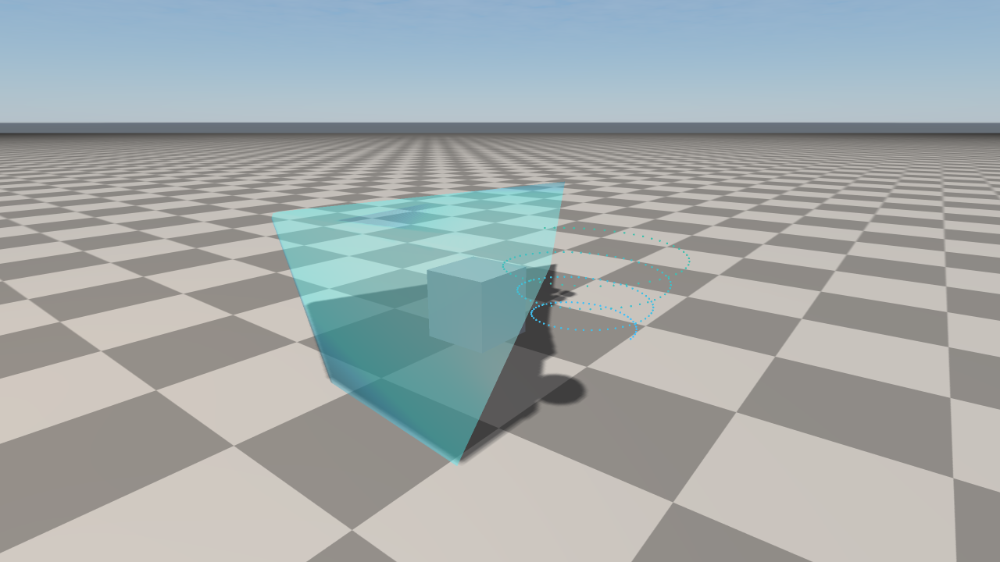
The sensor and visual-aid records are shown together: the cyan frustum is a
sensor/camera helper, the blue spiral is a point_cloud, the small
orange boxes are an instanced_visual, the cyan sphere marks a
reflection_probe, and the translucent blue box marks an
irradiance_volume.
A Minimal Example, Top To Bottom
Putting it together, this is roughly the smallest valid scene with one folder, one material, one camera, one light, and one dynamic box:
raisim_engine_scene 1
time_step 0.0025
gravity 0 0 -9.81
solver 80 1e-07 0.2 accurate defaultFriction=0.8 defaultRestitution=0
snapping true true false false false false false false 0.1 15 0.1 0 surfaceNormal=0,0,1
asset_root .
scene_graph inheritedTransforms=true keepWorldTransformOnReparent=true \
dragReparenting=true packedSceneOverrides=true transformSpace=global
editor_ux multiSelect=true copyPaste=true duplicate=true \
transformLocalSpace=false selectionFilters=true strongUndoGrouping=true \
selectionFilterKinds=
render_bake probeCaptureOnSave=false lightmapBakeEnabled=false \
irradianceBakeEnabled=false renderDiagnostics=false \
lightmapResolution=1024 probeCubemapSize=256 outputDirectory=bakes
environment 0.08 0.10 0.13 0.24 0.25 0.29 0 true true 10 - \
backgroundMode=rayrai_sky pbrEnvironmentIntensity=1
weather true preset=clear quality=balanced timeOfDay=12
rayrai_render preset=balanced custom=false colorMode=unreal_preview
material mat_box 0.7 0.3 0.2 1 0 0.6 0 0 0 0 false - - - - - - id=mat_box
group /World id=folder_world parentId=- visible=true locked=false expanded=true
group /World/Props id=folder_props parentId=folder_world visible=true \
locked=false expanded=true
light /World/MainLight -0.3 0.4 -1.0 3.5 id=light_main type=directional \
position=0,0,5 color=1,0.97,0.92 shadows=true shadowResolution=2048
camera /World/Cam 3 -5 2 0.92 0 0 0.39 52 0.05 100 1280 720 rgb true \
id=camera_main
object /World/Ground ground 0 0 0 1 0 0 0 20 20 1 1 0 0 default mat_box \
false true true - static true 1 18446744073709551615 id=object_ground \
parentGroupId=folder_world
object /World/Props/CrateA box 0 0 0.5 1 0 0 0 1 1 1 0.5 1 1.0 default mat_box \
false true false - dynamic true 1 18446744073709551615 id=object_cratea \
parentGroupId=folder_props
When the scene above is loaded by raisim_engine2, instantiated through
raisim_engine2::RaisimBridge, and rendered through
raisim_engine2::RayraiBridge, it looks like this:
{kind=link}
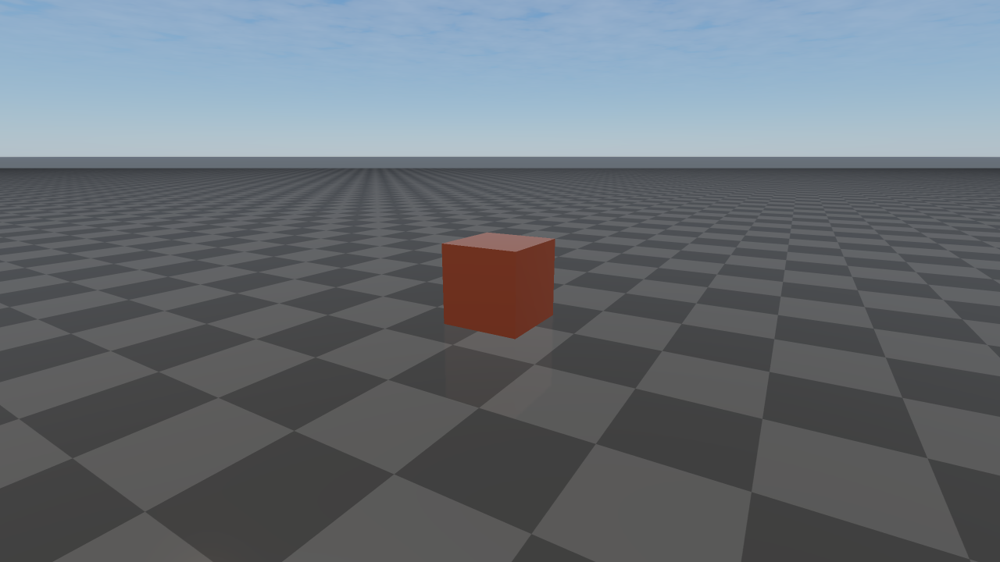
The single warm directional light comes from the light /World/MainLight
record, the orange tint is the mat_box material’s albedo
(0.7 0.3 0.2 1), the camera frame matches the camera /World/Cam
record’s eye point and 52° FOV, and the procedural sky comes from
environment backgroundMode=rayrai_sky + weather preset=clear.
Loading And Saving Programmatically
The C++ entry points are in raisim_engine2/RSceneIO.hpp:
#include "raisim_engine2/RSceneIO.hpp"
raisim_engine2::Scene scene;
std::string error;
if (!raisim_engine2::loadRsceneFile("warehouse.rscene", scene, &error)) {
// error contains "line N: ..." diagnostic
}
// Mutate scene...
if (!raisim_engine2::saveRsceneFile(scene, "out.rscene", &error)) {
// ...
}
// String/stream overloads are also available:
std::string text = raisim_engine2::saveRsceneString(scene);
raisim_engine2::loadRsceneString(text, scene, &error);
Errors are returned via the optional std::string* argument as
line <N>: <message>, where <N> is the 1-based source line. The
Scene instance is left in a partially populated state on failure, so the
caller should discard it or load into a fresh Scene and only swap on
success.
To instantiate a loaded scene into a live raisim::World, use
raisim_engine2::RaisimBridge (header:
raisim_engine2/RaisimBridge.hpp). For rendering it through rayrai, use
raisim_engine2::RayraiBridge. Neither bridge depends on the .rscene
text — they consume the in-memory Scene — so the file format is decoupled
from the runtime systems it feeds.
Relationship To Projects And Scripts
A .rscene is self-contained but is normally edited inside a project
directory. A project root holds a raisim_engine2_project text file plus
assets/, examples/ (or another scene_directory), and a
default_scene .rscene:
raisim_engine2_project 1
name RaiSim Engine 2 Built-in Project
asset_directory assets
scene_directory examples
default_scene examples/warehouse_scene.rscene
description Built-in scenes and assets shipped with raisim_engine2.
The asset_root record inside a scene records the path the scene resolves
mesh/texture references against, so a scene saved under a project remains
portable as long as the referenced assets travel with it.
.re2 scripts are a parallel authoring surface: they are a tiny imperative
language whose commands map one-to-one onto Scene mutations. Running
raisim_engine2 --script foo.re2 --save foo.rscene is equivalent to
opening the editor, executing the commands, and saving the resulting
document. The .re2 form is what version-controlled authoring tests use;
the .rscene form is what runtime tools load.
Comments And Blank Lines
Lines whose first character is
#are comments and are ignored by the loader.Blank lines are ignored.
The trailing
\rof a CRLF line ending is stripped, so files written on Windows load identically.